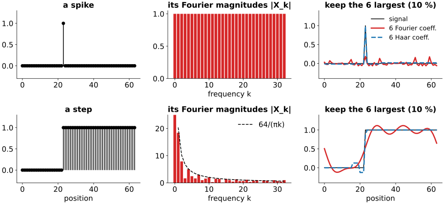
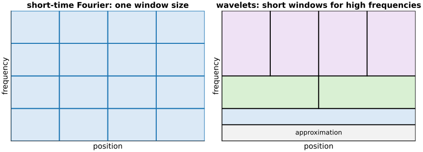
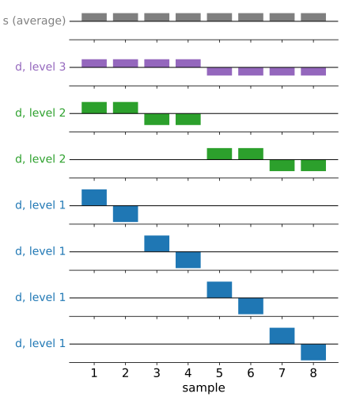

The Fourier transform rewrites a signal as a sum of waves. Every wave runs over the whole signal, so the spectrum says which frequencies are present but not where. Today: a basis whose functions are short.
A spike and a step in the Fourier basis: every coefficient is busy.
The short-time Fourier transform, and why one window size cannot serve all frequencies.
The wavelet idea: short windows for high frequencies, long windows for low ones.
The Haar transform by hand: averages and differences, level by level, and back.
The Haar basis is orthonormal, and piecewise-constant signals are sparse in it.
Slides titled The math give the formulas and proofs; the ideas are complete without them.
Recall: the Fourier basis is global
From Images in frequency space (day 1): the DFT is a change of basis to waves e^{2\pi i k n/N}, each of which extends over the whole signal. It is orthogonal, so nothing is lost and energies add up (Parseval).
That is perfect for signals that are periodic or smooth everywhere. Images are not: they are flat in most places, with edges and spots at a few positions.
A spike and a step in the Fourier basis

A spike: every Fourier magnitude is exactly 1. Where the spike is lives only in the phases, spread over all coefficients.
A step: the magnitudes fall off slowly, like 1/k. Keep the 6 largest of 64 and the result rings everywhere (Gibbs).
6 coefficients in the Haar basis of this lecture (dashed blue) do much better: 12.5 % and 5.5 % error instead of 90 % and 19 %.
The math: spectra of a spike and a step
DFT X_k = \sum_{n=0}^{N-1} x_n e^{-2\pi i k n/N}.
Spike at n_0, x_n = [n = n_0]: \;X_k = e^{-2\pi i k n_0/N}, so |X_k| = 1 for everyk. The position n_0 is only in the phase -2\pi k n_0/N.
Box of m ones starting at n_0 (a step up and a step down): a geometric sum, |X_k| = \left|\sum_{n=n_0}^{n_0+m-1} e^{-2\pi i k n/N}\right| = \left|\frac{\sin(\pi k m/N)}{\sin(\pi k/N)}\right| \approx \frac{N}{\pi k}\,|\sin(\pi k m/N)| \quad (k \ll N).
So the coefficients of a jump decay only like 1/k: the energy beyond frequency K is \sum_{k > K} 1/k^2 \approx 1/K, which falls slowly. Cutting them off leaves an overshoot near the jump of about 9 % of the jump height that does not shrink as K grows (Gibbs phenomenon).
Fix 1: the short-time Fourier transform
Cut out a piece of the signal with a smooth window (the tapers of the Fourier unit), take its DFT, slide the window along.
Now each coefficient belongs to a position (the window) and a frequency: a tile in the position–frequency plane.
A narrow window locates the step well, but a few samples contain too few cycles of a slow wave to tell its frequency.
A wide window resolves low frequencies, but smears the step over the whole window.
One window size serves either the edges or the slow variations, not both.

The math: the uncertainty relation
For a window w(t) with \int |w|^2 dt = 1, define its spread in time and in (angular) frequency: \Delta t^2 = \int (t - \bar t)^2 |w(t)|^2 dt, \qquad \Delta\omega^2 = \frac{1}{2\pi}\int (\omega - \bar\omega)^2 |\hat w(\omega)|^2 d\omega.
Heisenberg–Gabor: \Delta t\,\Delta\omega \ge \tfrac12, with equality only for a Gaussian window (Gabor 1946).
Squeezing the window in time by a factor s, w(t) \to \sqrt{s}\,w(st), multiplies \Delta t by 1/s and \Delta\omega by s: the area of a tile is fixed, only its shape can change.
The STFT uses the same tile shape everywhere. Wavelets change the shape with the frequency: \Delta t \propto 1/\omega, so each tile holds about the same number of cycles.
Fix 2: the wavelet idea
Short windows for high frequencies, long windows for low frequencies.
High frequencies (edges, spots, noise) change quickly: we want to know exactly where they are.
Low frequencies (slow shading) are spread out anyway: a long window gives their frequency precisely, and their position does not matter much.
So: tall, thin tiles at high frequency; short, wide tiles at low frequency (right panel of the tiling figure).
The simplest way to build such tiles is to keep halving the signal: pairs, then pairs of pairs, … This is the Haar transform (Haar, 1910).
The Haar transform by hand
Replace each pair (a, b) by its average and half-difference: s = \frac{a + b}{2}, \qquad d = \frac{a - b}{2}. Keep the ds; repeat on the ss. For x = (4, 6, 10, 12, 8, 6, 5, 5):
level
averages s
differences d (kept)
1
5,\ 11,\ 7,\ 5
-1,\ -1,\ 1,\ 0
2
8,\ 6
-3,\ 1
3
7
1
Result (coarse to fine): (7 \mid 1 \mid -3,\ 1 \mid -1,\ -1,\ 1,\ 0). Eight numbers in, eight out: 1 overall average + 1 + 2 + 4 details, each detail tied to a place and a scale.
Try it: the Haar transform step by step
Going back: nothing is lost
Each step can be undone: from s and d, a = s + d, \qquad b = s - d.
Board example backwards: 7 \pm 1 \to (8, 6); 8 \pm (-3) \to (5, 11), 6 \pm 1 \to (7, 5); then 5 \pm (-1) \to (4, 6), … back to x.
The Haar transform is a change of basis, like the DFT: the same signal, described by different numbers.
The coefficient of a basis vector says how much of that pattern the signal contains. Which patterns?
The Haar basis vectors

Each coefficient multiplies one pattern; the signal is their sum.
One constant (the overall average),
one +/-square wave over the whole signal,
two over half the signal, four over a quarter.
Short patterns for fine detail, long ones for coarse: the wavelet tiling. They are all the same shape, shifted and squeezed: that shape is the Haar wavelet.
With 1/\sqrt2 in place of 1/2 at each step the patterns all have length 1 and are perpendicular: an orthonormal basis.
The math: the Haar matrix is orthogonal
Normalised step: s = (a + b)/\sqrt2, d = (a - b)/\sqrt2, i.e. each pair is multiplied by \tfrac{1}{\sqrt2}\begin{pmatrix}1 & 1\\ 1 & -1\end{pmatrix}, an orthogonal matrix (a rotation by 45° and a reflection).
One level on N samples is block-diagonal in these 2 \times 2 blocks (after reordering): orthogonal. A product of orthogonal matrices is orthogonal, so the whole transform c = Hx has H H^\top = I.
Hence Parseval: \|c\|^2 = x^\top H^\top H x = \|x\|^2, and the inverse is the transpose, x = H^\top c.
With 1/2 the rows are still perpendicular but have lengths 2^{-j/2}: invertible, not orthonormal. Board example: \|x\|^2 = 446, but \sum c^2 = 63 with 1/2 and 446 with 1/\sqrt2.
Why this pays off: sparsity
A coefficient is zero when its pattern sees a flat signal.
A piecewise-constant signal has nonzero details only where a jump falls inside a pattern: at most one per level, near each jump.
A spike touches only the patterns that contain it: one per level plus the average, \log_2 N + 1 coefficients (4 of 8, 9 of 256).
A ramp gives nonzero details everywhere: Haar patterns only see constants as “nothing to report”. Better wavelets in the next unit.
Few large coefficients and many (near-)zero ones = sparse. Keeping only the large ones then loses little.
Try it: sparsity in two bases
The math: error of keeping K coefficients
Orthonormal basis \{\mathbf u_i\}, coefficients c_i = \mathbf u_i^\top x, so x = \sum_i c_i \mathbf u_i. Keep a set S of K indices: \hat x = \sum_{i \in S} c_i \mathbf u_i. Then \|x - \hat x\|^2 = \Big\|\sum_{i \notin S} c_i\mathbf u_i\Big\|^2 = \sum_{i \notin S} c_i^2.
The error is the sum of the dropped squared coefficients (Pythagoras), so the best S keeps the Klargest|c_i|.
The error curve against K depends only on the sorted magnitudes |c|_{(1)} \ge |c|_{(2)} \ge \dots: a basis is good for a signal when they fall fast.
This only holds in an orthonormal basis. With the 1/2 normalisation, coefficients at different levels are not comparable: a level-j coefficient counts 2^j times in the error.
Summary
The Fourier basis is global: a spike or a step spreads over all coefficients, and truncation rings.
A window trades position against frequency resolution; one window size cannot fit all frequencies. Wavelets use short windows for high frequencies, long for low.
Haar transform: pairwise averages and differences, repeated on the averages; inverse a = s + d, b = s - d.
With 1/\sqrt2 it is an orthonormal change of basis: energy is preserved, and the error of dropping coefficients is the sum of their squares.
Piecewise-constant signals are sparse in the Haar basis; ramps are not: next unit, wavelets with more vanishing moments.